01
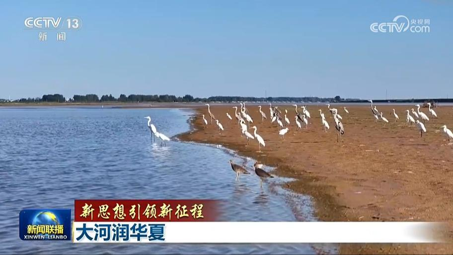
【新思想引领新征程】大河润华夏
横贯华夏大地的黄河是孕育中华文明的母亲河。习近平总书记指出：“治理黄河，重在保护，要在治理。”眼下，沿黄九省区牢固树立全流域一盘棋理念，上下联动、协同治水，让黄河成为造福人民的幸福河。
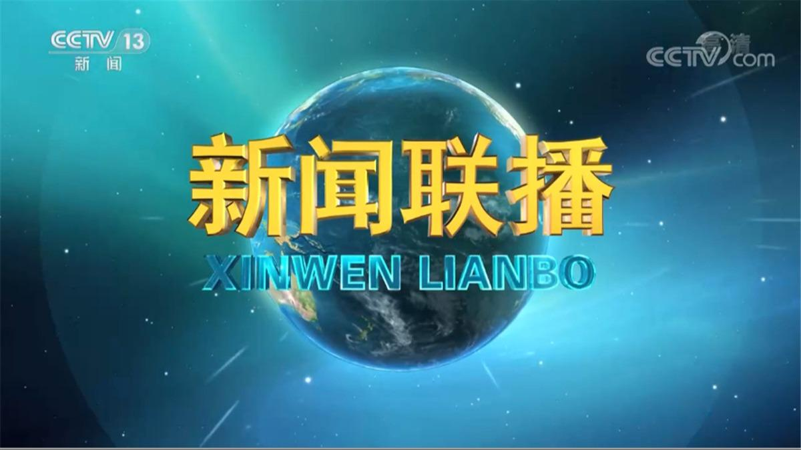

横贯华夏大地的黄河是孕育中华文明的母亲河。习近平总书记指出：“治理黄河，重在保护，要在治理。”眼下，沿黄九省区牢固树立全流域一盘棋理念，上下联动、协同治水，让黄河成为造福人民的幸福河。
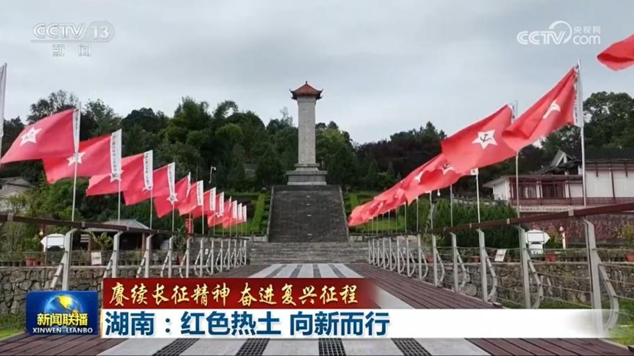
湖南是红军长征经过的15个省份之一，红军将士在此留下了可歌可泣的英雄壮歌。如今，这片红色热土赓续红色血脉，正以奋斗之姿，书写高质量发展新篇章。
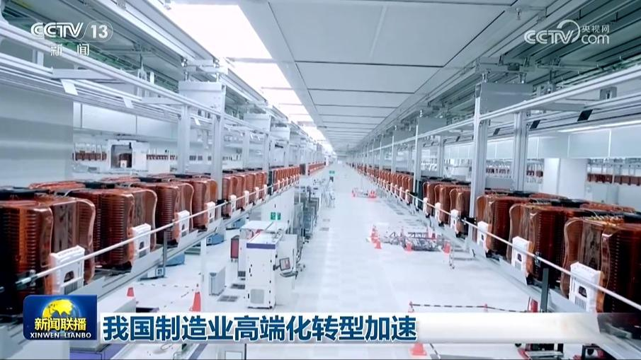
今年以来，我国制造业持续加快转型升级，高端化、智能化、绿色化步伐提速，推动工业经济不断提质向新。
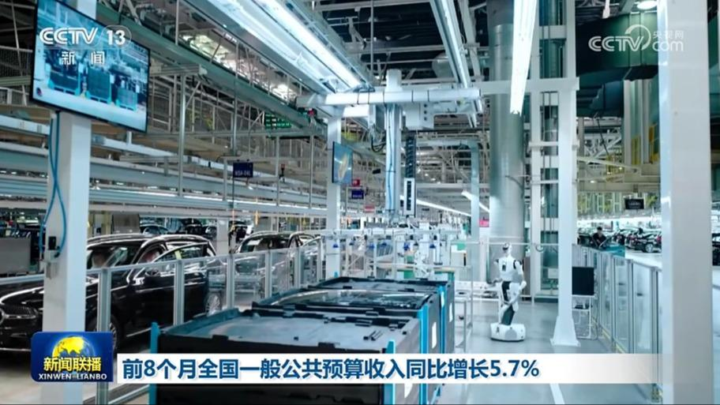
财政部数据显示：今年1—8月，全国一般公共预算收入15.66万亿元，同比增长5.7%，总体平稳增长。
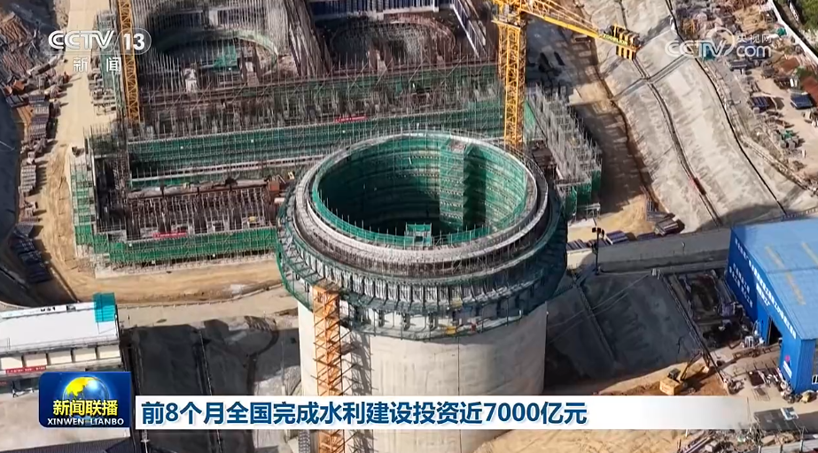
记者从水利部了解到，今年以来，我国加快推进国家水网建设。1至8月，全国完成水利建设投资6903亿元，继续保持高位运行。
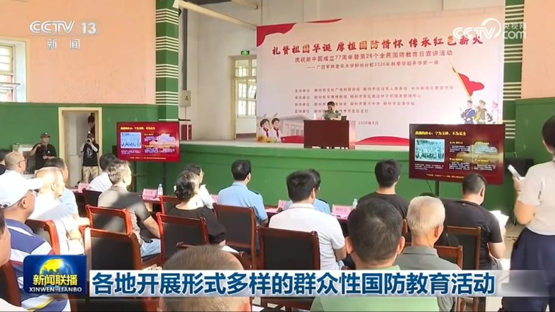
各地开展形式多样的群众性国防教育活动，引导广大干部群众增强国防观念、履行国防义务。
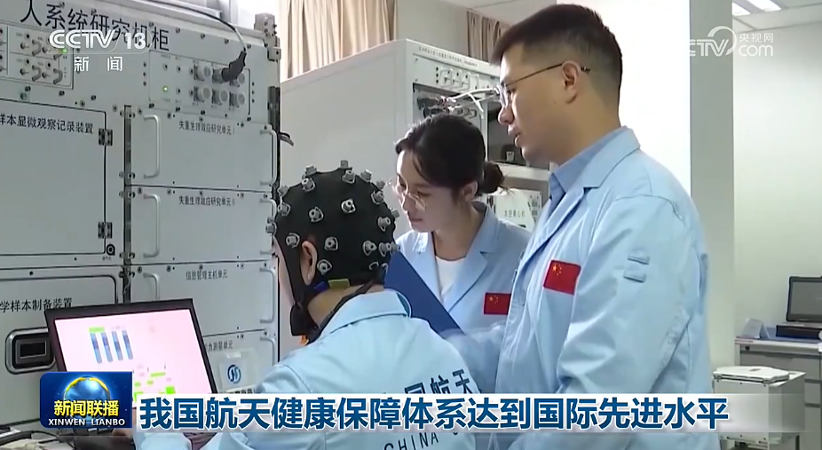
记者今天（9月19日）从我国首届航天医学工程大会上获悉，中国空间站稳定运行五年来，我国航天健康保障体系总体达到国际先进水平，空间站长期驻留保障能力持续提升。
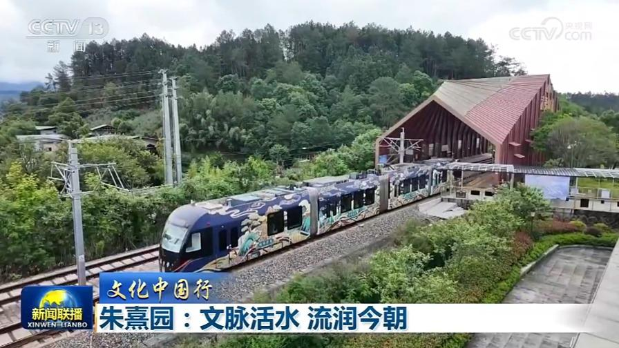
“问渠那得清如许？为有源头活水来。”八百多年前，南宋大儒朱熹在武夷山留下的这句诗，不仅道出了治学的真谛，更成为中华文化生生不息的生动注脚。文化中国行，今天（9月19日）走进武夷山朱熹园。
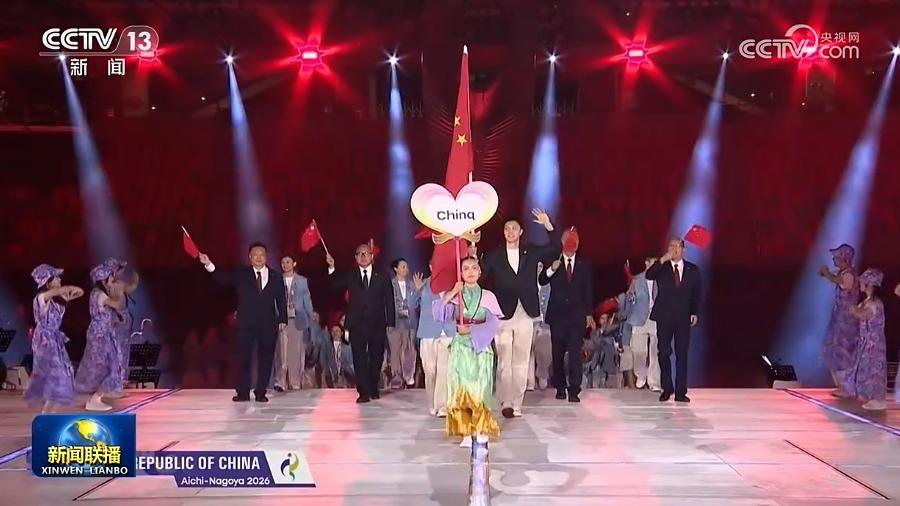
第二十届亚洲运动会今天（9月19日）在日本开幕。开幕式上，男子篮球运动员胡明轩、女子拳击运动员吴愉担任中国代表团旗手，引领中国体育代表团入场。
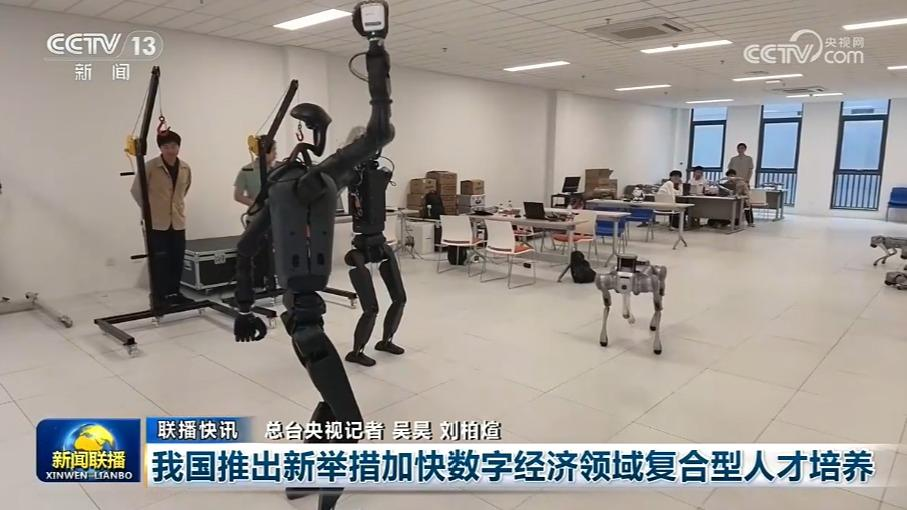
《文化产业发展“十五五”规划》发布
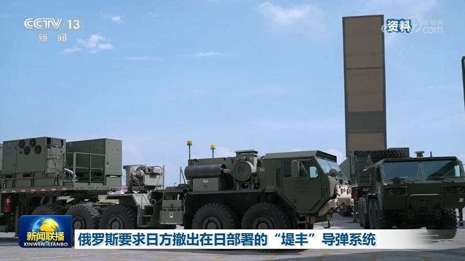
俄罗斯外交部发言人扎哈罗娃18日在俄外交部官网发表评论说，俄方要求日方撤出在日本部署的美国“堤丰”中程导弹系统。扎哈罗娃表示，俄方已于3日向日本发出抗议照会。无论日方有何种借口，无论部署期限与方式如何，均不得在其领土进行该导弹系统的前沿部署。扎哈罗娃强调，日本政府必须全面承认二战结果，包括涉及南千岛群岛的领土归属问题，并放弃其再军事化政策。
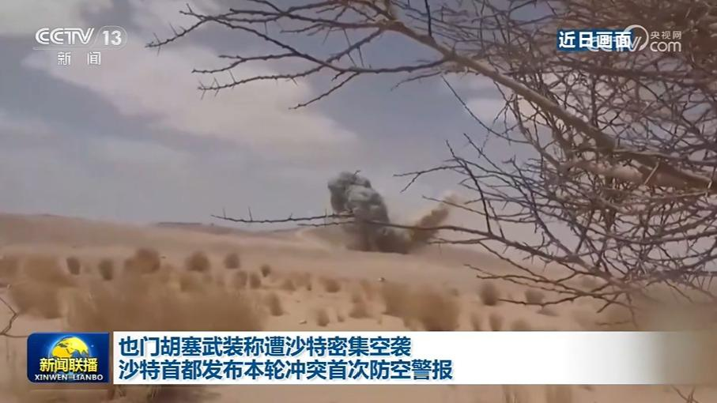
也门胡塞武装发言人叶海亚18日称，过去24小时，沙特战机对也门塔伊兹省发动了26次空袭。过去一周，也门遭沙特约300次空袭。也门政府军同一天发布视频称，在马里卜省多个地点打击了胡塞武装目标。
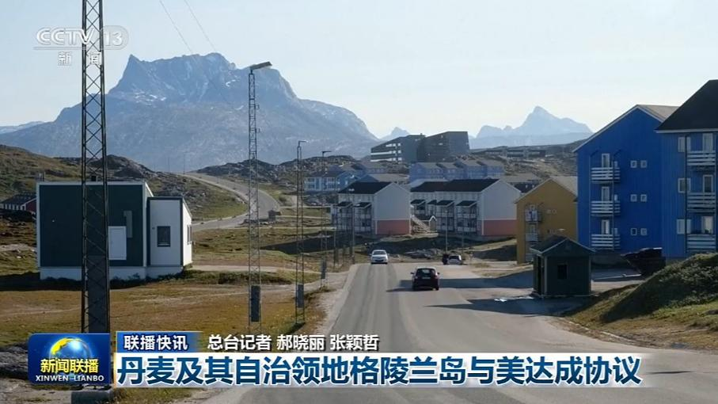
中方强调联合国维和行动要服务政治进程